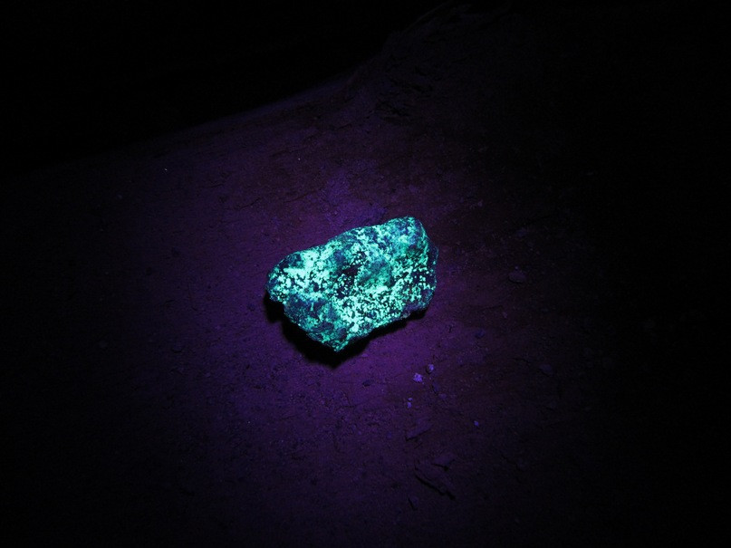

Радий
Ра́дий (химический символ — Ra, от лат. Radium) — химический элемент 2-й группы (по устаревшей классификации — главной подгруппы второй группы, IIA) седьмого периода периодической системы химических элементов Д. И. Менделеева с атомным номером 88.Простое вещество радий — это блестящий щелочноземельный металл серебристо-белого цвета, быстро тускнеющий на воздухе.
Об открытии элемента сообщили в 1898 г. П. Кюри, М. Склодовская-Кюри и Ж. Бемон. Супруги Кюри в лабораторных условиях переработали около 1 т заводских отходов, оставшихся после извлечения урана из урановой смолки, и выделили первые 90 мг чистого RaCl2. Название дано от латинского radius – луч, поскольку за поведением нового элемента следили по его излучению. Металлический радий выделен Склодовской-Кюри и А. Дебьерном электролизом раствора хлорида в 1910 г. В СССР первые препараты радия получили В. Г. Хлопин и И. Я. Башилов в 1921 г.

Из отходов переработки урановых руд радий выделяют дробной кристаллизацией в сочетании с методами ионного обмена. Для определения радия используют радиометрические методы.Изучение радия сыграло огромную роль в развитии научного познания, т. к. позволило выяснить многие вопросы, связанные с явлением радиоактивности. Длительное время радий был единственным элементом, радиоактивные свойства которого находили практическое применение в медицине, для приготовления люминофоров постоянного свечения (например, ёлочных игрушек постоянного свечения) и др. В 1950-е гг. радий был почти полностью вытеснен другими, более дешёвыми радионуклидами. В настоящее время радий в небольших количествах используют в медицине как источник радона для приготовления радоновых ванн. В смеси с бериллием радий иногда используют для приготовления ампульных источников нейтронов.Радий высокотоксичен.